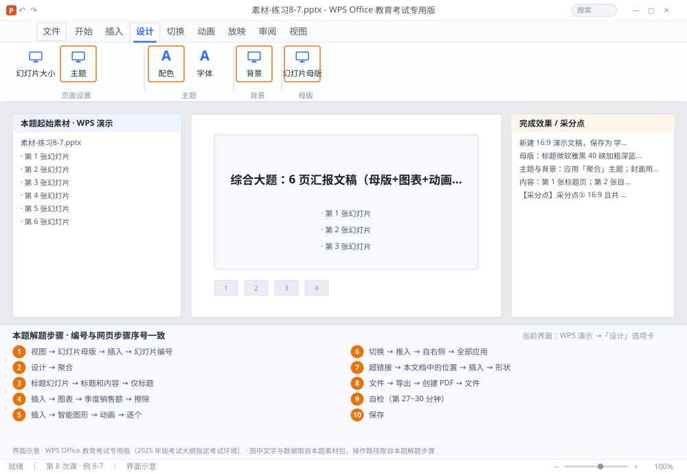

完成比对文档 · 例 8-7
综合大题：6 页汇报文稿（母版+图表+动画+切换+链接+输出） ｜ 第 8 次课 / WPS 演示 ｜ 网页：实操-演示2.html ｜ 考试环境：WPS Office 教育考试专用版（2025 年版考试大纲指定考试环境）
用途 本页按修订后的题目要求与解题步骤生成，是交卷自查的结果基准：
逐项列出每一步应出现的可复核结果，配合模拟操作截图与解题结果文件使用。
它不是素材包的一部分，不会预置答案动作；起始素材仍从本题素材包下载。
一、本题起始素材包
目录：练习素材/练习8-7-六页汇报综合题/ ｜
下载包：练习素材/下载/练习8-7-六页汇报综合题.zip
二、题目要求
- 新建 16:9 演示文稿，保存为 学号-姓名-综合.pptx，共 6 张幻灯片。
- 母版：标题微软雅黑 40 磅加粗深蓝，正文微软雅黑 24 磅；右上角加 logo（宽 2 厘米）；底部右侧加页码。
- 主题与背景：应用「聚合」主题；封面用图片背景（拉伸），其余页用浅色渐变背景。
- 内容：第 1 张标题页；第 2 张目录（4 条）；第 3 张「现状」含 1 张柱形图；第 4 张「问题」含 3 条项目符号（图片符号）；第 5 张「对策」含智能图形流程；第 6 张「谢谢」。
- 动画：第 3 张图表「擦除」进入（上一动画之后）；第 5 张智能图形「逐个」出现。
- 切换：全部应用「推入」自右侧，0.75 秒；第 6 张单独用「淡入淡出」。
- 链接：第 2 张目录 4 条分别链接到第 3~6 张；第 6 张加「返回目录」动作按钮。
- 输出：导出 PDF（全部 6 页）与讲义（每页 4 张）。
- 保存并按 10 项采分点自检（见下方「采分点」）。
三、解题步骤（编号与下方核对表、截图编号一致）
- 先建母版（第 1~6 分钟）。「视图」→「幻灯片母版」→ 选中最上方母版→ 标题占位符设微软雅黑 40 磅加粗、深蓝 RGB(22,50,79)；正文 24 磅。插 logo（宽 2 厘米，右上角，置于底层）→「插入」→「幻灯片编号」→ 勾选编号与日期、「标题幻灯片中不显示」→ 全部应用 → 关闭母版。
- 再定主题（第 6~8 分钟）。「设计」→ 主题「聚合」→ 配色选一种。封面单独设图片背景（拉伸），其余 5 页设浅色渐变（线性向下）。
- 铺结构（第 8~12 分钟）。新建 6 张 → 第 1 张「标题幻灯片」、第 2~5 张「标题和内容」、第 6 张「仅标题」→ 逐页填标题与要点。
- 做图表（第 12~16 分钟）。第 3 张「插入」→「图表」→ 簇状柱形图 → 输入 4 个季度数据 → 标题「季度销售额」。给图表设「擦除」进入动画，开始方式「上一动画之后」。
- 做流程图（第 16~19 分钟）。第 5 张「插入」→「智能图形」→ 流程类 → 输入 4 步 →「动画」→ 效果选项选「逐个」（让节点依次出现）。
- 设切换（第 19~21 分钟）。「切换」→「推入」→ 效果选项「自右侧」→ 时长 0.75 →「全部应用」→ 再单独选中第 6 张 → 选「淡入淡出」（不点全部应用）。
- 加链接（第 21~24 分钟）。第 2 张目录 4 条文字分别右键 →「超链接」→「本文档中的位置」→ 对应第 3/4/5/6 张。第 6 张「插入」→「形状」→「动作按钮：第一张」→ 单击鼠标超链接到第 2 张（目录页），并在按钮上右键「添加文字」写「返回目录」。
- 输出（第 24~27 分钟）。「文件」→「导出」→「创建 PDF」→ 保存；再「文件」→「打印」→ 打印内容「讲义」、每页 4 张、水平顺序、A4 横向 → 预览确认。
- 自检（第 27~30 分钟）。按下方 10 项采分点逐条核对，重点看：母版是否真的改在母版层、切换是否全部应用、链接是否指向正确页、页码是否为占位符。
- 保存。Ctrl+S。
四、完成效果 / 采分点
采分点① 16:9 且共 6 张 ② 母版标题微软雅黑 40 磅加粗深蓝 ③ 母版正文 24 磅 ④ logo 宽 2 厘米位于右上角 ⑤ 页码为占位符且非标题页显示 ⑥ 「聚合」主题 + 封面图片背景 + 其余渐变背景 ⑦ 第 3 张柱形图 + 擦除动画（上一动画之后） ⑧ 第 5 张智能图形逐个出现 ⑨ 全部页「推入」自右侧 0.75 秒、第 6 张单独淡入淡出 ⑩ 目录 4 条链接与返回按钮可用、已导出 PDF 与讲义
五、逐项完成核对表
| 步骤 | 关键操作路径 | 应出现的结果（可复核） |
|---|
| 1 | 先建母版（第 1~6 分钟） | 6 分、「视图」、「幻灯片母版」、40 磅、24 磅 |
| 2 | 再定主题（第 6~8 分钟） | 8 分、「设计」、「聚合」、5 页 |
| 3 | 铺结构（第 8~12 分钟） | 12 分、6 张、1 张、「标题幻灯片」、5 张 |
| 4 | 做图表（第 12~16 分钟） | 16 分、3 张、「插入」、「图表」、「季度销售额」 |
| 5 | 做流程图（第 16~19 分钟） | 19 分、5 张、「插入」、「智能图形」、「动画」 |
| 6 | 设切换（第 19~21 分钟） | 21 分、「切换」、「推入」、「自右侧」、「全部应用」 |
| 7 | 加链接（第 21~24 分钟） | 24 分、2 张、「超链接」、「本文档中的位置」、6 张 |
| 8 | 输出（第 24~27 分钟） | 27 分、「文件」、「导出」、「创建 PDF」、「打印」 |
| 9 | 自检（第 27~30 分钟） | 30 分 |
| 10 | 保存 | 保存 |
六、模拟操作截图

界面示意 · WPS Office 教育考试专用版 · 橙色编号与本题解题步骤序号一致；
图中文字与数据取自本题素材包，功能入口取自本题解题步骤。
核对方法：按网页解题步骤完成并另存自己的成稿后，逐行比对本表第 3 列的
参数、公式、区域、文件名与对象数量；再对照网页「完成效果 / 采分点」检查版式是否一致。